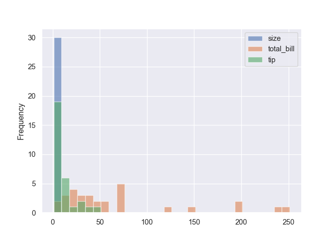

import pandas as pd
from pandas.plotting import scatter_matrix
import numpy as np
import matplotlib.pyplot as plt
from matplotlib.cm import viridis, plasma
import seaborn as sns
sns.set()
tips = sns.load_dataset("tips")
# pour se debarrasser du type Category
for colonne in ['sex', 'smoker', 'day', 'time']:
tips[colonne] = tips[colonne].astype(object)
# pour reduire le nombre de lignes
tips = tips.groupby(['sex', 'smoker', 'day', 'time', 'size']
)[['total_bill', 'tip']].sum().reset_index().iloc[:30]
# pour verifier que l'index est utilise dans certains graphiques
tips.index = range(50,80)
tips.head() sex smoker day time size total_bill tip
50 Female No Fri Dinner 2 22.75 3.25
51 Female No Fri Lunch 3 15.98 3.00
52 Female No Sat Dinner 1 7.25 1.00
53 Female No Sat Dinner 2 149.28 21.23
54 Female No Sat Dinner 3 69.83 10.74Introduction
On peut generer des graphiques en une ligne de code avec pandas, pour une exploration rapide des donnees. On presente ci-dessous une partie des possibilites offertes, on trouve beaucoup plus de details sur https://pandas.pydata.org/pandas-docs/stable/user_guide/visualization.html
Avec l’index sur un des axes
Courbes
Courbes sur un meme graphique.
tips.plot()
plt.show()Un graphique par courbe.
g = tips.plot(subplots = True)
plt.show()Les cumul des courbes precedentes sous forme d’aire, avec la palette “plasma” de viridis.
tips.plot(kind = "area", colormap = plasma)
plt.show()Diagramme circulaire d’une panda.Series
Ici l’index correspond aux jours.
tips.groupby("day")["tip"].sum().plot(kind = "pie", y = "tip", figsize=(5, 5))
plt.show()
Avec une autre syntaxe.
tips.groupby("day")["tip"].sum().plot.pie(y = "tip", figsize=(5, 5))
plt.show()Diagrammes en barres
Barres horizontales cote a cote.
tips[["total_bill", "tip"]].plot(kind = "barh")
plt.show()Barres verticales et empilees.
tips.plot(kind = "bar", stacked = True)
plt.show()Distribution des variables continues
Histogrammes
Grille d’histogrammes.
g = tips.hist()
plt.show()Grille d’histogrammes d’une variable groupee par une autre.
g = tips.total_bill.hist(by = tips.day)
plt.show()Histogrammes superposes (pas tres lisible).
tips.plot(kind = "hist", alpha = 0.6, bins = 30)
plt.show()
Histogrammes empiles.
tips.plot(kind = "hist", bins = 30, stacked = True)
plt.show()Boxplots
Boxplots horizontaux.
tips.plot(kind = "box", vert = False)
plt.show()Boxplots verticaux d’une variable groupee par une autre (en mode horizontal ca peut bugger …).
g = tips.boxplot(by = 'sex')
plt.show()Densites de distribution
Densites superposees (pas tres lisible).
tips.plot(kind = "kde")
plt.show()Graphiques de deux variables
Nuage de points.
cles = ['Thur', 'Fri', 'Sat', 'Sun']
nb_col = len(cles)
dico_col = dict(zip(cles, np.array(range(nb_col))/(nb_col-1)))
couleurs = tips.day.map(dico_col)
legende = pd.DataFrame(dico_col, index = ["a"])
tips.plot(kind = "scatter", x= "total_bill", y = "tip", c = couleurs, cmap = viridis,
s = tips["size"]*20)
plt.show()legende Thur Fri Sat Sun
a 0.0 0.333333 0.666667 1.0Pavage hexagonal.
tips.plot(kind = "hexbin", x = "tip", y = "size", gridsize = 15)
plt.show()Densite de chaque variable numerique + croisement deux a deux des variables numeriques.
g = scatter_matrix(tips, alpha=0.2, figsize=(6, 6), diagonal="kde")
plt.show()Meme representation avec des histogrammes.
g = scatter_matrix(tips, alpha=0.2, figsize=(6, 6))
plt.show()